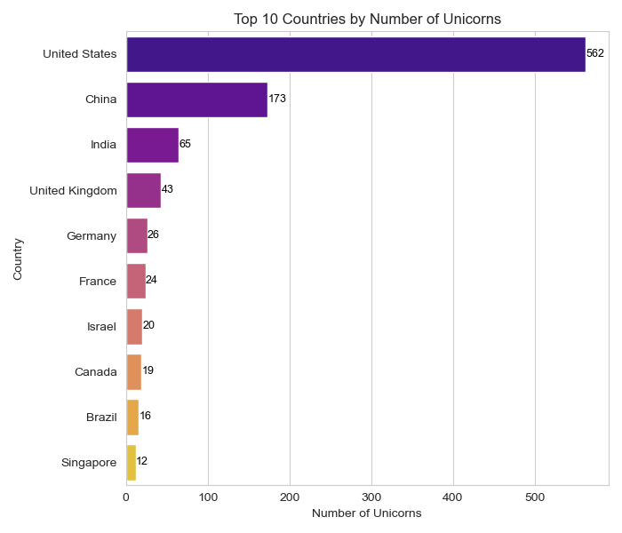
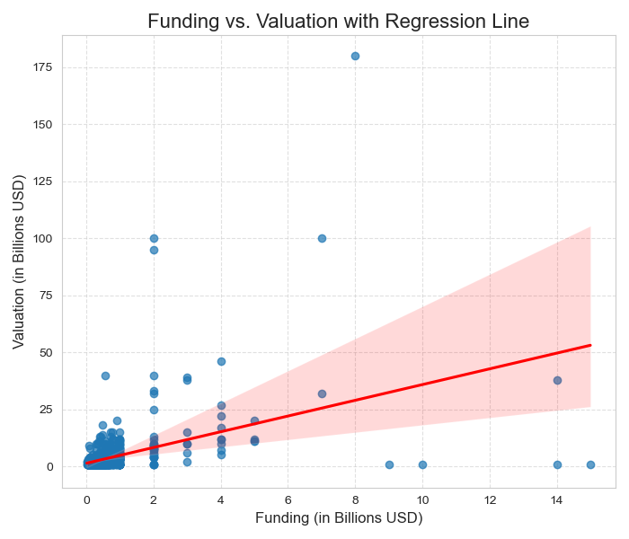
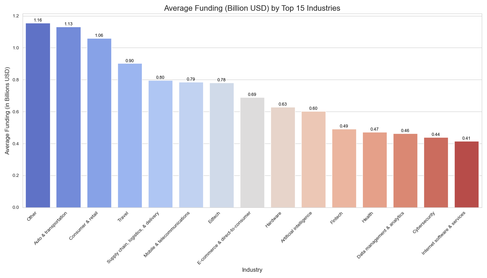
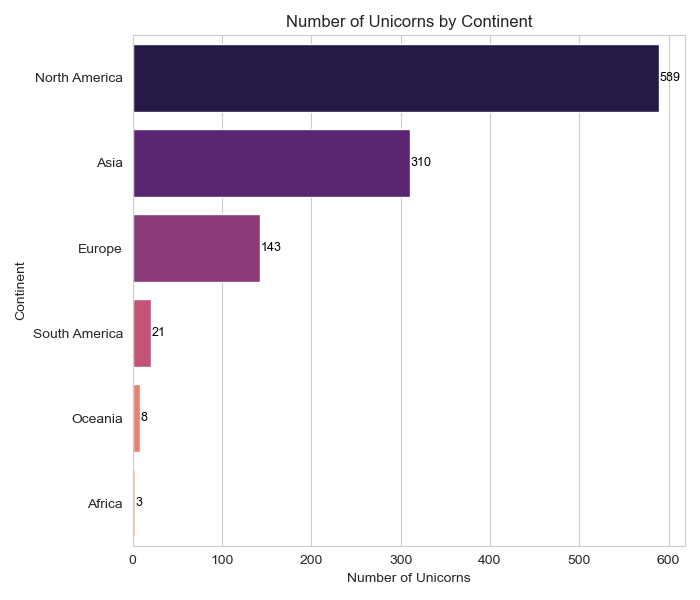
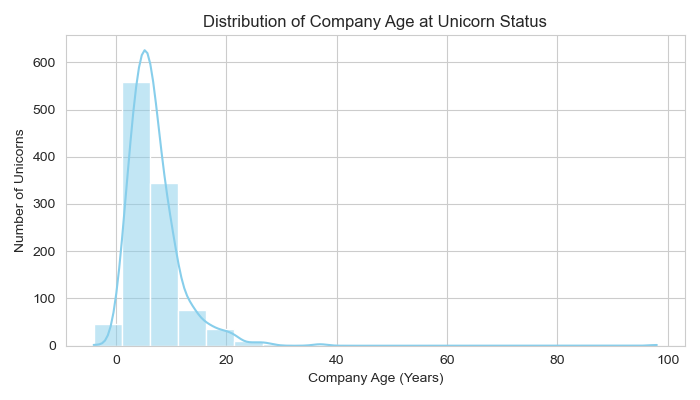

Unicorn Companies Data Analysis

Project Overview & Problem Statement
This project focuses on analyzing a dataset containing information on global unicorn companies (privately held startups valued at over $1 billion). The primary objective was to uncover trends, patterns, and insights related to their growth, funding, and industry distribution. The analysis aims to provide a comprehensive understanding of the characteristics that define these high-growth entities in the global business landscape.
For the full code and to explore the project structure, please visit the GitHub repository.
Dataset
The analysis utilized the "Unicorn_Companies.csv" dataset, comprising 1074 entries and 10 columns. Each entry represents a unique unicorn company, providing information on:
Company: Name of the unicorn company.Valuation: Company's valuation in billions of USD.Date Joined: Date when the company achieved unicorn status.Industry: Industry sector of the company.City: City where the company is headquartered.Country: Country where the company is headquartered.Continent: Continent where the company is headquartered.Year Founded: Year the company was founded.Funding: Total funding received by the company in billions of USD.Select Investors: Key investors in the company.
Initial data inspection involved cleaning the 'Valuation' and 'Funding' columns to numerical formats and converting 'Date Joined' to datetime objects for time-series analysis.
Methodology & Approach
The analysis followed a structured approach, employing various data manipulation and visualization techniques:
- Data Loading & Initial Inspection: Loaded the dataset and performed initial checks to understand its structure, data types, and summary statistics.
- Data Cleaning & Preprocessing: Cleaned numerical columns like 'Valuation' and 'Funding' to ensure they were in a usable format (e.g., converting '$' and 'B' to numerical billions). Converted 'Date Joined' to datetime objects.
- Feature Engineering: Calculated 'Company Age' (Date Joined - Year Founded) and extracted 'Year Joined' for time-based analysis.
- Correlation Analysis: Calculated and visualized the correlation matrix between numerical features (Valuation, Funding, Company Age, Year Founded, Year Joined) to identify relationships.
- Distribution Analysis: Explored the distribution of key metrics such as `Company Age` and `Valuation`.
- Geographical Distribution: Analyzed the number of unicorns and their valuations across different continents and countries.
- Industry Analysis: Examined the distribution of unicorns across various industries and average funding within them.
- Time-Series Analysis: Created plots to visualize the growth of unicorns over time, including cumulative trends and average valuations.
- Top Companies & Investors Analysis: Identified and visualized the top unicorn companies by valuation and the most active investors.
Key Findings
The analysis yielded several crucial insights into the unicorn ecosystem, supported by the following visualizations:
1. Top Industries with Unicorn Companies
This bar chart illustrates the distribution of unicorn companies across the top 10 industries. It clearly shows that Fintech and Internet Software & Services are the leading sectors, housing the highest number of unicorn companies. This highlights the areas of most significant innovation and growth in the startup world.
2. Top 10 Countries with Unicorn Companies
This bar chart displays the countries with the highest number of unicorn companies. The United States significantly leads, followed by **China**, underscoring their dominance in fostering high-growth startups. This geographical concentration indicates the key innovation hubs globally.

3. Number of Unicorn Companies Joined Each Year
This bar chart illustrates the funding trend over time by showing the number of companies that achieved unicorn status in each specific year. It reveals a noticeable increase in new unicorns starting around 2019, with a significant surge in 2021 and 2022, indicating a period of accelerated growth in the startup ecosystem.
4. Valuation Distribution Histogram
This histogram provides a clear view of the distribution of unicorn company valuations. It shows that the majority of unicorn companies are concentrated at the lower end of the valuation spectrum, particularly around the $1 billion to $5 billion mark. The long tail indicates a few companies with exceptionally high valuations, making the distribution right-skewed.
5. Valuation Distribution Boxplot
Complementing the histogram, this box plot further highlights the valuation distribution. It visually represents the median, quartiles, and the presence of numerous outliers on the higher end. This indicates that while the median unicorn valuation is relatively modest, a small number of companies achieve significantly larger valuations.
6. Correlation of numerical values (Valuation,Funding,Company Age,Year Founed, Year Joined)
the most significant relationships are between funding and valuation, and the expected relationship between company age and year joined.
7. Funding vs. Valuation with Regression Line (Regression Plot)
This regression plot further illustrates the positive relationship between funding and valuation, with a regression line indicating the general trend. While funding is a significant factor, the scatter of points around the line suggests that other variables also play a role in determining a company's final valuation.

8. Average Valuation (Billion USD) of Unicorns by Industry and Year Joined (Heatmap)
This heatmap provides a detailed view of how average valuations have evolved across different industries over time. Darker shades indicate higher average valuations for specific industry-year combinations, revealing periods and sectors of exceptional growth in company value.
9. Average Funding (Billion USD) by Top 15 Industries
This bar chart ranks industries by their average funding, highlighting sectors that are more capital-intensive. It shows that Auto & Transportation and Consumer & Retail industries have the highest average funding, indicating substantial investment in these areas.

10. Number of Unicorn Companies by Continent
This bar chart clearly shows the geographical distribution of unicorn companies. North America and Asia overwhelmingly dominate the global unicorn landscape, followed by Europe, while other continents have a much smaller share.

11. Distribution of Company Age (Years)
This histogram illustrates how long it typically takes for companies to achieve unicorn status. The distribution is right-skewed, indicating that many companies become unicorns relatively quickly (within a few years), though a few take much longer.

12. Distribution of Unicorn Company Valuations by Continent (Violin Plot)
This violin plot provides a detailed view of valuation distributions across continents, showing not just the median but also the density of valuations. It highlights that while most unicorns globally are valued at the lower end, North America and Asia have a significant number of outliers with extremely high valuations.
13. Top 10 Most Active Investors in Unicorn Companies
This bar chart identifies the top venture capital firms and investment groups that have invested in the most unicorn companies. Firms like Accel, Andreessen Horowitz, and Tiger Global Management consistently appear at the top, signifying their profound impact on the unicorn ecosystem.
14. Cumulative Number of Unicorn Companies Over Time
This line plot with data labels visually tracks the total count of unicorn companies as they emerge over the years. It clearly shows an exponential growth trend, particularly a sharp increase from 2020 to 2022, reflecting a booming period for startups achieving billion-dollar valuations.
15. Average Valuation (Billion USD) of Unicorn Companies Over Time
This line plot shows the average valuation of unicorn companies based on the year they joined the unicorn club. It reveals fluctuations in average valuation, with some early years showing higher averages due to fewer, but extremely high-valued, companies. The trend provides insight into the changing "size" of an average unicorn over time.
16. Top 10 Unicorn Companies by Valuation (Billion USD)
This bar chart presents the ten most highly valued unicorn companies globally. It highlights the titans of the private startup world, with Bytedance, SpaceX, and SHEIN leading the pack, showcasing the peak valuations achieved in this ecosystem.
Implications & Further Research
The findings underscore the dynamic and rapidly evolving nature of the global unicorn ecosystem. The concentration of unicorns in specific regions and industries, coupled with the surge in new unicorns in recent years, highlights the impact of technological advancements and investment trends. Understanding these dynamics can provide valuable insights for aspiring entrepreneurs, investors, and policymakers alike. Further research could delve deeper into factors driving the valuation spikes, the long-term success rates of unicorns, and a more granular analysis of investor portfolios to identify specific investment strategies.
Growth Recommendations for Unicorn Companies
Based on the analysis, here are strategic recommendations for unicorn companies to foster continued growth and success:
- 1. Access Venture Capital Funds When Needed:
- Unicorn companies in regions like Africa, Oceania, and South America should actively engage with venture capitalists to explore funding opportunities for scaling their businesses. The presence of over 500 select investors supporting unicorn growth in the USA suggests a robust funding environment that can be leveraged.
- Networking with unicorn companies in countries with a high number of select investors can provide valuable insights and connections to potential investors.
- 2. Establishment of a Growth Culture Within the Business:
- Develop and transparently share future revenue and staffing objectives and projections with internal stakeholders to align the entire organization towards growth.
- Employ experienced professionals with relevant skills and capabilities to meet both current and future business needs, ensuring the team can support rapid expansion.
- Foster effective and open communication across all levels of management, actively working to eliminate office politics, prejudice, and bias to create a conducive work environment.
- Create and provide continuous training and advancement opportunities for staff to drive retention, as a skilled and motivated workforce is crucial for sustained growth.
- 3. Leverage Emerging Technology:
- Artificial Intelligence and Machine Learning can significantly help companies improve their systems and processes. Given that 46% of unicorns are in Fintech and 31.4% are in Internet Software and Services, these technologies are clearly pivotal for efficiency and innovation in leading unicorn sectors.
- 4. Focus on Creating the Right Strategic Objectives Per Time:
- Prioritize growing the customer base into new markets to increase revenue streams. The observed surge in unicorns in 2020 and 2022 indicates periods where market expansion was highly effective.
- Invest more in research and development to continually innovate and improve operational efficiency, ensuring long-term competitiveness.
- Actively engage in networking and forming partnerships with other unicorns. With 47.8% of unicorns in San Francisco, 32.3% in New York, and 19.9% in Beijing, these hubs offer prime opportunities for collaboration and learning best practices on growth strategies.
Project Information
- Category Data Analysis / Business Intelligence
- Client Self-Project
- Project date Nov 2024
- Project URL GitHub Repository
- Full Report View Jupyter Notebook
- View Live Notebook (GitHub)
Tools & Technologies
- Python
- Pandas
- NumPy
- Matplotlib
- Seaborn
- Jupyter Notebook